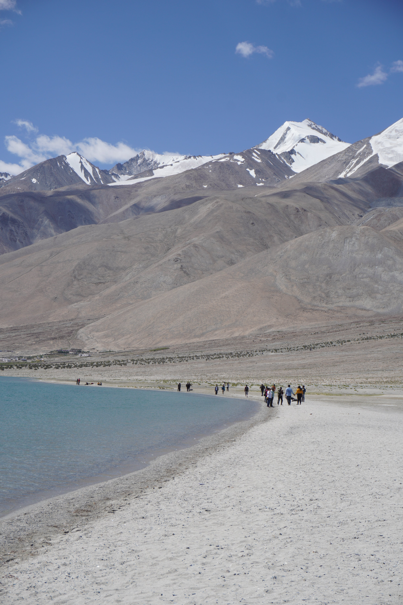
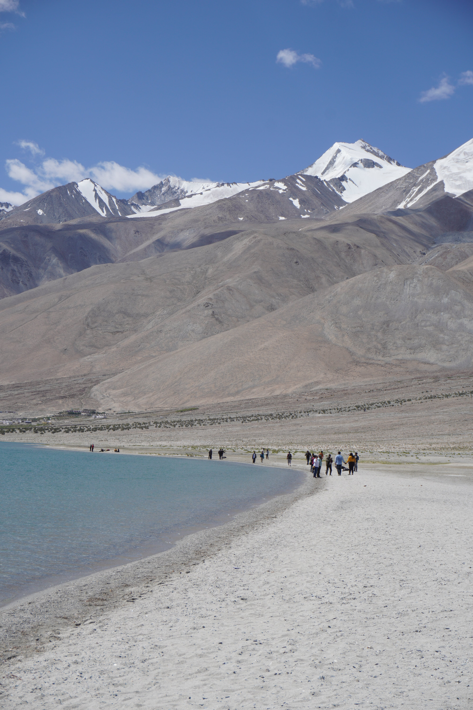
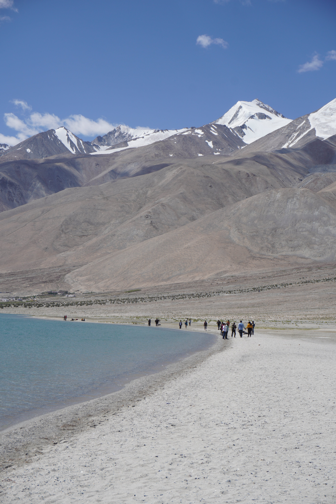

Spiti
Holygrail for motorcyclists
Some of the oldest and largest monasteries
confleunce of Spiti and Pin river
Authentic Tibetan culture
From World's Highest village Komik to the Fossil village of Langza
Write letters from the world's highest postoffice
Mesmerising landscape and Chandratal Lake
